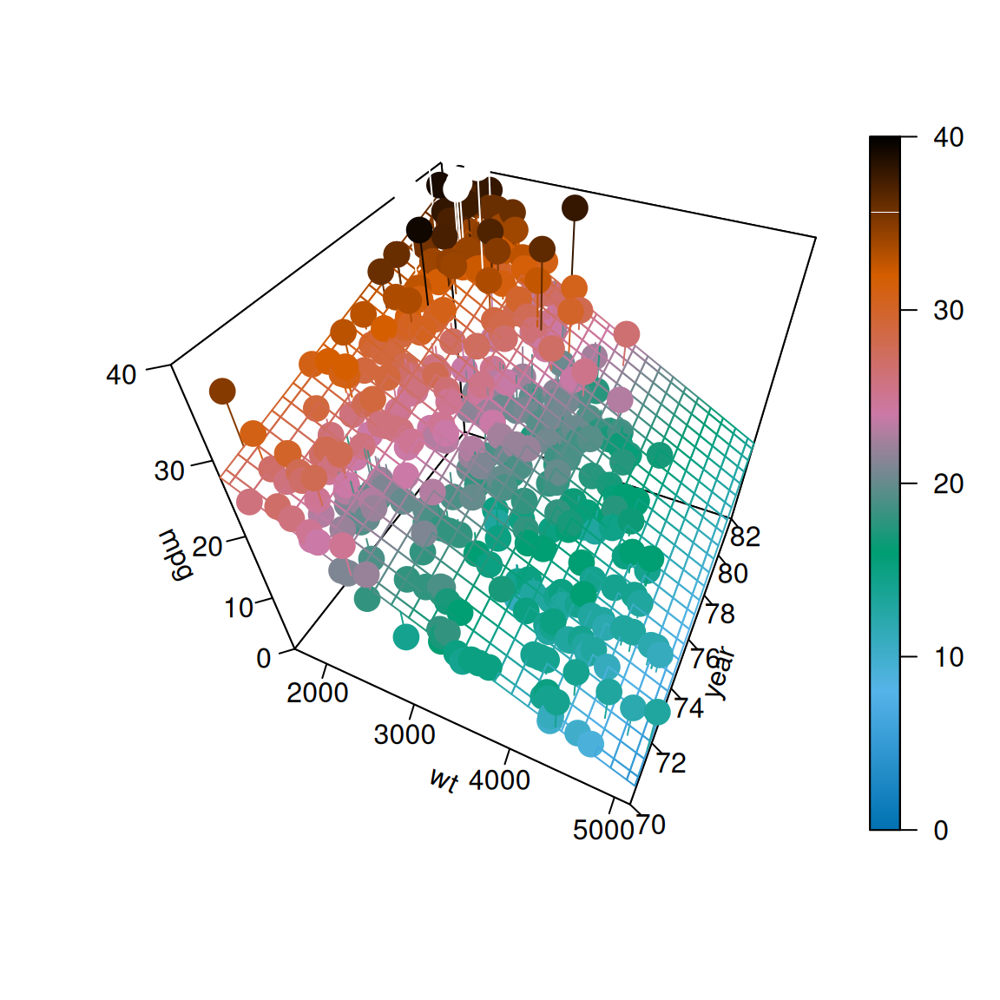
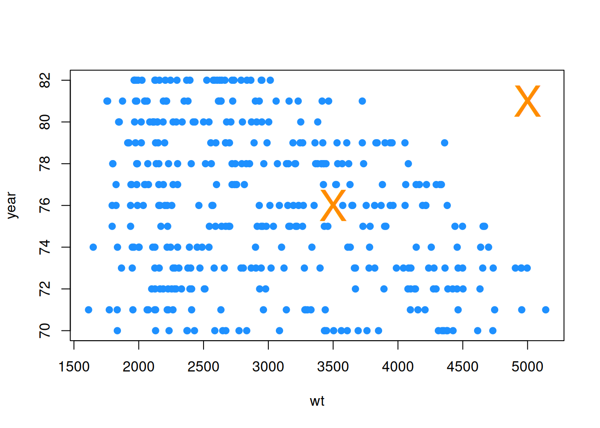
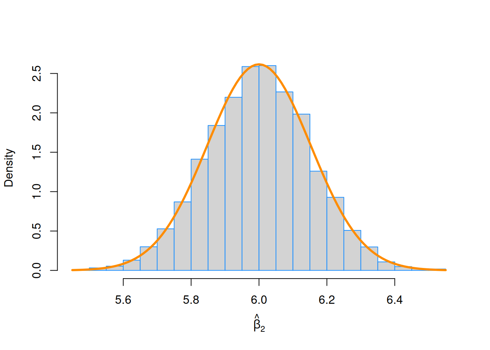

“Life is really simple, but we insist on making it complicated.”
— Confucius
After reading this chapter you will be able to:
Construct and interpret linear regression models with more than one predictor.
Understand how regression models are derived using matrices.
Create interval estimates and perform hypothesis tests for multiple regression parameters.
Formulate and interpret interval estimates for the mean response under various conditions.
Compare nested models using an ANOVA F-Test.
The last two chapters we saw how to fit a model that assumed a linear relationship between a response variable and a single predictor variable. Specifically, we defined the simple linear regression model,
\[
Y_i = \beta_0 + \beta_1 x_i + \epsilon_i
\]
where \(\epsilon_i \sim N(0, \sigma^2)\).
However, it is rarely the case that a dataset will have a single predictor variable. It is also rarely the case that a response variable will only depend on a single variable. So in this chapter, we will extend our current linear model to allow a response to depend on multiple predictors.
# read the data from the webautompg <-read.table("http://archive.ics.uci.edu/ml/machine-learning-databases/auto-mpg/auto-mpg.data",quote ="\"",comment.char ="",stringsAsFactors =FALSE)# give the dataframe headerscolnames(autompg) =c("mpg", "cyl", "disp", "hp", "wt", "acc", "year", "origin", "name")# remove missing data, which is stored as "?"autompg <-subset(autompg, autompg$hp !="?")# remove the plymouth reliant, as it causes some issuesautompg <-subset(autompg, autompg$name !="plymouth reliant")# give the dataset row names, based on the engine, year and namerownames(autompg) =paste(autompg$cyl, "cylinder", autompg$year, autompg$name)# remove the variable for name, as well as originautompg <-subset(autompg, select =c("mpg", "cyl", "disp", "hp", "wt", "acc", "year"))# change horsepower from character to numericautompg$hp =as.numeric(autompg$hp)# check final structure of datastr(autompg)
We will once again discuss a dataset with information about cars. This dataset, which can be found at the UCI Machine Learning Repository contains a response variable mpg which stores the city fuel efficiency of cars, as well as several predictor variables for the attributes of the vehicles. We load the data, and perform some basic tidying before moving on to analysis.
For now we will focus on using two variables, wt and year, as predictor variables. That is, we would like to model the fuel efficiency (mpg) of a car as a function of its weight (wt) and model year (year). To do so, we will define the following linear model,
\[
Y_i = \beta_0 + \beta_1 x_{i1} + \beta_2 x_{i2} + \epsilon_i, \qquad i = 1, 2, \ldots, n
\]
where \(\epsilon_i \sim N(0, \sigma^2)\). In this notation we will define:
\(x_{i1}\) as the weight (wt) of the \(i\)th car.
\(x_{i2}\) as the model year (year) of the \(i\)th car.
The picture below will visualize what we would like to accomplish. The data points \((x_{i1}, x_{i2}, y_i)\) now exist in 3-dimensional space, so instead of fitting a line to the data, we will fit a plane. (We’ll soon move to higher dimensions, so this will be the last example that is easy to visualize and think about this way.)

How do we find such a plane? Well, we would like a plane that is as close as possible to the data points. That is, we would like it to minimize the errors it is making. How will we define these errors? Squared distance of course! So, we would like to minimize
with respect to \(\beta_0\), \(\beta_1\), and \(\beta_2\). How do we do so? It is another straightforward multivariate calculus problem. All we have done is add an extra variable since we did this last time. So again, we take a derivative with respect to each of \(\beta_0\), \(\beta_1\), and \(\beta_2\) and set them equal to zero, then solve the resulting system of equations. That is,
Here we have once again fit our model using lm(), however we have introduced a new syntactical element. The formula mpg ~ wt + year now reads: “model the response variable mpg as a linear function of wt and year.” That is, it will estimate an intercept, as well as slope coefficients for wt and year. We then extract these as we have done before using coef().
In the multiple linear regression setting, some of the interpretations of the coefficients change slightly.
Here, \(\hat{\beta}_0 = -14.6376419\) is our estimate for \(\beta_0\), the mean miles per gallon for a car that weighs 0 pounds and was built in 1900. We see our estimate here is negative, which is a physical impossibility. However, this isn’t unexpected, as we shouldn’t expect our model to be accurate for cars from 1900 which weigh 0 pounds. (Because they never existed!) This isn’t much of a change from SLR. That is, \(\beta_0\) is still simply the mean when all of the predictors are 0.
The interpretation of the coefficients in front of our predictors is slightly different than before. For example \(\hat{\beta}_1 = -0.0066349\) is our estimate for \(\beta_1\), the average change in miles per gallon for an increase in weight (\(x_{1}\)) of one-pound for a car of a certain model year, that is, for a fixed value of \(x_{2}\). Note that this coefficient is actually the same for any given value of \(x_{2}\). Later, we will look at models that allow for a different change in mean response for different values of \(x_{2}\). Also note that this estimate is negative, which we would expect since, in general, fuel efficiency decreases for larger vehicles. Recall that in the multiple linear regression setting, this interpretation is dependent on a fixed value for \(x_{2}\), that is, “for a car of a certain model year.” It is possible that the indirect relationship between fuel efficiency and weight does not hold when an additional factor, say year, is included, and thus we could have the sign of our coefficient flipped.
Lastly, \(\hat{\beta}_2 = 0.761402\) is our estimate for \(\beta_2\), the average change in miles per gallon for a one-year increase in model year (\(x_{2}\)) for a car of a certain weight, that is, for a fixed value of \(x_{1}\). It is not surprising that the estimate is positive. We expect that as time passes and the years march on, technology would improve so that a car of a specific weight would get better mileage now as compared to their predecessors. And yet, the coefficient could have been negative because we are also including weight as variable, and not strictly as a fixed value.
8.1 Matrix Approach to Regression
In our above example we used two predictor variables, but it will only take a little more work to allow for an arbitrary number of predictor variables and derive their coefficient estimates. We can consider the model,
where \(\epsilon_i \sim N(0, \sigma^2)\). In this model, there are \(p - 1\) predictor variables, \(x_1, x_2, \cdots, x_{p-1}\). There are a total of \(p\)\(\beta\)-parameters and a single parameter \(\sigma^2\) for the variance of the errors. (It should be noted that almost as often, authors will use \(p\) as the number of predictors, making the total number of \(\beta\) parameters \(p+1\). This is always something you should be aware of when reading about multiple regression. There is not a standard that is used most often.)
If we were to stack together the \(n\) linear equations that represent each \(Y_i\) into a column vector, we get the following.
The normal equations can be written much more succinctly in matrix notation,
\[
X^\top X \beta = X^\top y.
\]
We can then solve this expression by multiplying both sides by the inverse of \(X^\top X\), which exists, provided the columns of \(X\) are linearly independent. Then as always, we denote our solution with a hat.
\[
\hat{\beta} = \left( X^\top X \right)^{-1}X^\top y
\]
To verify that this is what R has done for us in the case of two predictors, we create an \(X\) matrix. Note that the first column is all 1s, and the remaining columns contain the data.
Recall, we like this estimate because it is unbiased, that is,
\[
\text{E}[s_e^2] = \sigma^2
\]
Note that the change from the SLR estimate to now is in the denominator. Specifically we now divide by \(n - p\) instead of \(n - 2\). Or actually, we should note that in the case of SLR, there are two \(\beta\) parameters and thus \(p = 2\).
Also note that if we fit the model \(Y_i = \beta + \epsilon_i\) that \(\hat{y} = \bar{y}\) and \(p = 1\) and \(s_e^2\) would become
which is likely the very first sample variance you saw in a mathematical statistics class. The same reason for \(n - 1\) in this case, that we estimated one parameter, so we lose one degree of freedom. Now, in general, we are estimating \(p\) parameters, the \(\beta\) parameters, so we lose \(p\) degrees of freedom.
Also, recall that most often we will be interested in \(s_e\), the residual standard error as R calls it,
In R, we could directly access \(s_e\) for a fitted model, as we have seen before.
summary(mpg_model)$sigma
[1] 3.431367
And we can now verify that our math above is indeed calculating the same quantities.
y_hat <- X %*%solve(t(X) %*% X) %*%t(X) %*% ye <- y - y_hatsqrt(t(e) %*% e / (n - p))
[,1]
[1,] 3.431367
sqrt(sum((y - y_hat) ^2) / (n - p))
[1] 3.431367
8.2 Sampling Distribution
As we can see in the output below, the results of calling summary() are similar to SLR, but there are some differences, most obviously a new row for the added predictor variable.
summary(mpg_model)
Call:
lm(formula = mpg ~ wt + year, data = autompg)
Residuals:
Min 1Q Median 3Q Max
-8.852 -2.292 -0.100 2.039 14.325
Coefficients:
Estimate Std. Error t value Pr(>|t|)
(Intercept) -1.464e+01 4.023e+00 -3.638 0.000312 ***
wt -6.635e-03 2.149e-04 -30.881 < 2e-16 ***
year 7.614e-01 4.973e-02 15.312 < 2e-16 ***
---
Signif. codes: 0 '***' 0.001 '**' 0.01 '*' 0.05 '.' 0.1 ' ' 1
Residual standard error: 3.431 on 387 degrees of freedom
Multiple R-squared: 0.8082, Adjusted R-squared: 0.8072
F-statistic: 815.6 on 2 and 387 DF, p-value: < 2.2e-16
To understand these differences in detail, we will need to first obtain the sampling distribution of \(\hat{\beta}\).
Recall from last time that when discussing sampling distributions, we now consider \(\hat{\beta}\) to be a random vector, thus we use \(Y\) instead of the data vector \(y\).
\[
\hat{\beta} = \left( X^\top X \right)^{-1}X^\top Y
\]
Then it is a consequence of the multivariate normal distribution that,
can be found in the summary() output, in particular:
summary(mpg_model)$coef
Estimate Std. Error t value Pr(>|t|)
(Intercept) -14.637641945 4.0233913563 -3.638135 3.118311e-04
wt -0.006634876 0.0002148504 -30.881372 1.850466e-106
year 0.761401955 0.0497265950 15.311765 1.036597e-41
The estimate (Estimate), standard error (Std. Error), test statistic (t value), and p-value (Pr(>|t|)) for this test are displayed in the second row, labeled wt. Remember that the p-value given here is specifically for a two-sided test, where the hypothesized value is 0.
Also note in this case, by hypothesizing that \(\beta_1 = 0\) the null and alternative essentially specify two different models:
This is important. We are not simply testing whether or not there is a relationship between weight and fuel efficiency. We are testing if there is a relationship between weight and fuel efficiency, given that a term for year is in the model. (Note, we dropped some indexing here, for readability.)
Confidence Intervals
Since \(\hat{\beta}_j\) is our estimate for \(\beta_j\) and we have
\[
\text{E}[\hat{\beta}_j] = \beta_j
\]
as well as the standard error,
\[
\text{SE}[\hat{\beta}_j] = s_e\sqrt{C_{jj}}
\]
and the sampling distribution of \(\hat{\beta}_j\) is Normal, then we can easily construct confidence intervals for each of the \(\hat{\beta}_j\).
\[
\hat{\beta}_j \pm t_{\alpha/2, n - p} \cdot s_e\sqrt{C_{jj}}
\]
We can find these in R using the same method as before. Now there will simply be additional rows for the additional \(\beta\).
As we saw in SLR, we can create confidence intervals for the mean response, that is, an interval estimate for \(\text{E}[Y \mid X = x]\). In SLR, the mean of \(Y\) was only dependent on a single value \(x\). Now, in multiple regression, \(\text{E}[Y \mid X = x]\) is dependent on the value of each of the predictors, so we define the vector \(x_0\) to be,
The math has changed a bit, but the process in R remains almost identical. Here, we create a data frame for two additional cars. One car that weighs 3500 pounds produced in 1976, as well as a second car that weighs 5000 pounds which was produced in 1981.
new_cars <-data.frame(wt =c(3500, 5000), year =c(76, 81))new_cars
wt year
1 3500 76
2 5000 81
We can then use the predict() function with interval = "confidence" to obtain intervals for the mean fuel efficiency for both new cars. Again, it is important to make the data passed to newdata a data frame, so that R knows which values are for which variables.
R then reports the estimate \(\hat{y}(x_0)\) (fit) for each, as well as the lower (lwr) and upper (upr) bounds for the interval at a desired level (99%).
A word of caution here: one of these estimates is good while one is suspect.
new_cars$wt
[1] 3500 5000
range(autompg$wt)
[1] 1613 5140
Note that both of the weights of the new cars are within the range of observed values.
new_cars$year
[1] 76 81
range(autompg$year)
[1] 70 82
As are the years of each of the new cars.
plot(year ~ wt, data = autompg, pch =20, col ="dodgerblue", cex =1.5)points(new_cars, col ="darkorange", cex =3, pch ="X")

However, we have to consider weight and year together now. And based on the above plot, one of the new cars is within the “blob” of observed values, while the other, the car from 1981 weighing 5000 pounds, is noticeably outside of the observed values. This is a hidden extrapolation which you should be aware of when using multiple regression.
Shifting gears back to the new data pair that can be reasonably estimated, we do a quick verification of some of the mathematics in R.
With this in mind, confidence intervals for the individual \(\hat{\beta}_j\) are actually a special case of a confidence interval for mean response.
Prediction Intervals
As with SLR, creating prediction intervals involves one slight change to the standard error to account for the fact that we are now considering an observation, instead of a mean.
Here we use \(\hat{y}(x_0)\) to estimate \(Y_0\), a new observation of \(Y\) at the predictor vector \(x_0\).
This means that we can still calculate \(R^2\) in the same manner as before, which R continues to do automatically.
summary(mpg_model)$r.squared
[1] 0.8082355
The interpretation changes slightly as compared to SLR. In this MLR case, we say that \(80.82\%\) of the observed variation in miles per gallon is explained by the linear relationship with the two predictor variables, weight and year.
In multiple regression, the significance of regression test is
Here, we see that the null hypothesis sets all of the \(\beta_j\) equal to 0, except the intercept, \(\beta_0\). We could then say that the null model, or “model under the null hypothesis” is
\[
Y_i = \beta_0 + \epsilon_i.
\]
This is a model where the regression is insignificant. None of the predictors have a significant linear relationship with the response. Notationally, we will denote the fitted values of this model as \(\hat{y}_{0i}\), which in this case happens to be:
\[
\hat{y}_{0i} = \bar{y}.
\]
The alternative hypothesis here is that at least one of the \(\beta_j\) from the null hypothesis is not 0.
\[
H_1: \text{At least one of } \beta_j \neq 0, j = 1, 2, \cdots, (p-1)
\]
We could then say that the full model, or “model under the alternative hypothesis” is
This is a model where the regression is significant. At least one of the predictors has a significant linear relationship with the response. There is some linear relationship between \(y\) and the predictors, \(x_1, x_2, \ldots, x_{p - 1}\).
We will denote the fitted values of this model as \(\hat{y}_{1i}\).
To develop the \(F\) test for the significance of the regression, we will arrange the variance decomposition into an ANOVA table.
since we reject for large values of \(F\). A large value of the statistic corresponds to a large portion of the variance being explained by the regression. Here \(F_{p-1, n-p}\) represents a random variable which follows an \(F\) distribution with \(p - 1\) and \(n - p\) degrees of freedom.
To perform this test in R, we first explicitly specify the two models in R and save the results in different variables. We then use anova() to compare the two models, giving anova() the null model first and the alternative (full) model second. (Specifying the full model first will result in the same p-value, but some nonsensical intermediate values.)
That is, in the null model, we use neither of the predictors, whereas in the full (alternative) model, at least one of the predictors is useful.
null_mpg_model <-lm(mpg ~1, data = autompg)full_mpg_model <-lm(mpg ~ wt + year, data = autompg)anova(null_mpg_model, full_mpg_model)
Analysis of Variance Table
Model 1: mpg ~ 1
Model 2: mpg ~ wt + year
Res.Df RSS Df Sum of Sq F Pr(>F)
1 389 23761.7
2 387 4556.6 2 19205 815.55 < 2.2e-16 ***
---
Signif. codes: 0 '***' 0.001 '**' 0.01 '*' 0.05 '.' 0.1 ' ' 1
First, notice that R does not display the results in the same manner as the table above. More important than the layout of the table are its contents. We see that the value of the \(F\) statistic is 815.55, and the p-value is extremely low, so we reject the null hypothesis at any reasonable \(\alpha\) and say that the regression is significant. At least one of wt or year has a useful linear relationship with mpg.
summary(mpg_model)
Call:
lm(formula = mpg ~ wt + year, data = autompg)
Residuals:
Min 1Q Median 3Q Max
-8.852 -2.292 -0.100 2.039 14.325
Coefficients:
Estimate Std. Error t value Pr(>|t|)
(Intercept) -1.464e+01 4.023e+00 -3.638 0.000312 ***
wt -6.635e-03 2.149e-04 -30.881 < 2e-16 ***
year 7.614e-01 4.973e-02 15.312 < 2e-16 ***
---
Signif. codes: 0 '***' 0.001 '**' 0.01 '*' 0.05 '.' 0.1 ' ' 1
Residual standard error: 3.431 on 387 degrees of freedom
Multiple R-squared: 0.8082, Adjusted R-squared: 0.8072
F-statistic: 815.6 on 2 and 387 DF, p-value: < 2.2e-16
Notice that the value reported in the row for F-statistic is indeed the \(F\) test statistic for the significance of regression test, and additionally it reports the two relevant degrees of freedom.
Also, note that none of the individual \(t\)-tests are equivalent to the \(F\)-test as they were in SLR. This equivalence only holds for SLR because the individual test for \(\beta_1\) is the same as testing for all non-intercept parameters, since there is only one.
We can also verify the sums of squares and degrees of freedom directly in R. You should match these to the table from R and use this to match R’s output to the written table above.
# Degrees of Freedom: Regressionlength(coef(full_mpg_model)) -length(coef(null_mpg_model))
[1] 2
# Degrees of Freedom: Errorlength(resid(full_mpg_model)) -length(coef(full_mpg_model))
[1] 387
# Degrees of Freedom: Totallength(resid(null_mpg_model)) -length(coef(null_mpg_model))
[1] 389
8.4 Nested Models
The significance of regression test is actually a special case of testing what we will call nested models. More generally we can compare two models, where one model is “nested” inside the other, meaning one model contains a subset of the predictors from only the larger model.
where \(q < p\). This model has \(q - 1\) predictors, for a total of \(q\)\(\beta\)-parameters. We will denote the fitted values of this model as \(\hat{y}_{0i}\).
The difference between these two models can be codified by the null hypothesis of a test.
Specifically, the \(\beta\)-parameters from the full model that are not in the null model are zero. The resulting model, which is nested, is the null model.
We can then perform this test using an \(F\)-test, which is the result of the following ANOVA table.
Notice that the row for “Diff” compares the sum of the squared differences of the fitted values. The degrees of freedom is then the difference of the number of \(\beta\)-parameters estimated between the two models.
For example, the autompg dataset has a number of additional variables that we have yet to use.
names(autompg)
[1] "mpg" "cyl" "disp" "hp" "wt" "acc" "year"
We’ll continue to use mpg as the response, but now we will consider two different models.
Full: mpg ~ wt + year + cyl + disp + hp + acc
Null: mpg ~ wt + year
Note that these are nested models, as the null model contains a subset of the predictors from the full model, and no additional predictors. Both models have an intercept \(\beta_0\) as well as a coefficient in front of each of the predictors. We could then write the null hypothesis for comparing these two models as,
The alternative is simply that at least one of the \(\beta_{j}\) from the null is not 0.
To perform this test in R we first define both models, then give them to the anova() commands.
null_mpg_model <-lm(mpg ~ wt + year, data = autompg)#full_mpg_model = lm(mpg ~ wt + year + cyl + disp + hp + acc, data = autompg)full_mpg_model <-lm(mpg ~ ., data = autompg)anova(null_mpg_model, full_mpg_model)
Analysis of Variance Table
Model 1: mpg ~ wt + year
Model 2: mpg ~ cyl + disp + hp + wt + acc + year
Res.Df RSS Df Sum of Sq F Pr(>F)
1 387 4556.6
2 383 4530.5 4 26.18 0.5533 0.6967
Here we have used the formula mpg ~ . to define to full model. This is the same as the commented out line. Specifically, this is a common shortcut in R which reads, “model mpg as the response with each of the remaining variables in the data frame as predictors.”
Here we see that the value of the \(F\) statistic is 0.553, and the p-value is very large, so we fail to reject the null hypothesis at any reasonable \(\alpha\) and say that none of cyl, disp, hp, and acc are significant with wt and year already in the model.
Again, we verify the sums of squares and degrees of freedom directly in R. You should match these to the table from R, and use this to match R’s output to the written table above.
# Degrees of Freedom: Difflength(coef(full_mpg_model)) -length(coef(null_mpg_model))
[1] 4
# Degrees of Freedom: Fulllength(resid(full_mpg_model)) -length(coef(full_mpg_model))
[1] 383
# Degrees of Freedom: Nulllength(resid(null_mpg_model)) -length(coef(null_mpg_model))
[1] 387
8.5 Simulation
Since we ignored the derivation of certain results, we will again use simulation to convince ourselves of some of the above results. In particular, we will simulate samples of size n = 100 from the model
\[
Y_i = 5 + -2 x_{i1} + 6 x_{i2} + \epsilon_i, \qquad i = 1, 2, \ldots, n
\]
where \(\epsilon_i \sim N(0, \sigma^2 = 16)\). Here we have two predictors, so \(p = 3\).
As is the norm with regression, the \(x\) values are considered fixed and known quantities, so we will simulate those first, and they remain the same for the rest of the simulation study. Also note we create an x0 which is all 1, which we need to create our X matrix. If you look at the matrix formulation of regression, this unit vector of all 1s is a “predictor” that puts the intercept into the model. We also calculate the C matrix for later use.
We then simulate the response according the model above. Lastly, we place the two predictors and response into a data frame. Note that we do not place x0 in the data frame. This is a result of R adding an intercept by default.
So far so good. Everything checks out. Now we will finally simulate from this model repeatedly in order to obtain an empirical distribution of \(\hat{\beta}_2\).
We expect \(\hat{\beta}_2\) to follow a normal distribution,
Note that \(C_{22}\) corresponds to the element in the third row and third column since \(\beta_2\) is the third parameter in the model and because R is indexed starting at 1. However, we index the \(C\) matrix starting at 0 to match the diagonal elements to the corresponding \(\beta_j\).
C[3, 3]
[1] 0.00145343
C[2+1, 2+1]
[1] 0.00145343
sigma ^2* C[2+1, 2+1]
[1] 0.02325487
We now perform the simulation a large number of times. Each time, we update the y variable in the data frame, leaving the x variables the same. We then fit a model, and store \(\hat{\beta}_2\).
The standard deviations found from the simulated data and the parent population are also very close.
sd(beta_hat_2)
[1] 0.1530819
sqrt(sigma ^2* C[2+1, 2+1])
[1] 0.1524955
Lastly, we plot a histogram of the simulated values, and overlay the true distribution.
hist(beta_hat_2, prob =TRUE, breaks =20, xlab =expression(hat(beta)[2]), main ="", border ="dodgerblue")curve(dnorm(x, mean = beta_2, sd =sqrt(sigma ^2* C[2+1, 2+1])), col ="darkorange", add =TRUE, lwd =3)

This looks good! The simulation-based histogram appears to be Normal with mean 6 and spread of about 0.15 as you measure from center to inflection point. That matches really well with the sampling distribution of \(\hat{\beta}_2 \sim N\left(\mu = 6, \sigma^2 = 0.0232549 \right)\).
One last check, we verify the \(68 - 95 - 99.7\) rule.
sd_bh2 <-sqrt(sigma ^2* C[2+1, 2+1])# We expect these to be: 0.68, 0.95, 0.997mean(beta_2 -1* sd_bh2 < beta_hat_2 & beta_hat_2 < beta_2 +1* sd_bh2)